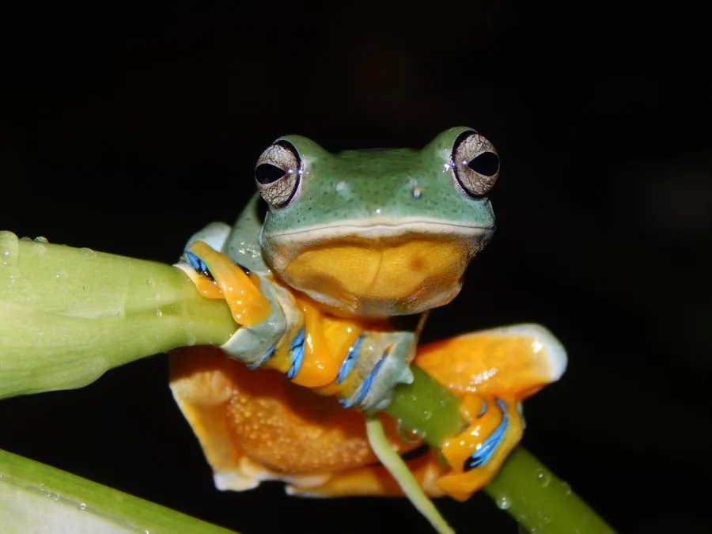

两栖动物 · 动物界
黑蹼树蛙 Rhacophorus reinwardtii

东南亚雨林中的树蛙，趾间长着宽大黑色蹼膜，可以在树冠间滑翔数十米，蝌蚪在树洞积水中发育。
- 分类
- 门脊索动物门纲两栖纲目无尾目科树蛙科属树蛙属
- 栖息环境
- 热带雨林树冠层、林下灌木与积水树洞附近
- 地理分布
- 印度尼西亚爪哇、苏门答腊及马来西亚等地
- 保护级别
- IUCN 无危（LC）；非中国原产，在中国无保护级别
物种志
黑蹼树蛙体长约 6–8 厘米，雌蛙略大。体背呈鲜绿色，腹部白色，体侧有黑色斑点；四肢细长，趾端有吸盘，趾间蹼膜宽大而呈黑色，张开时像一对小翅膀，是它滑翔的工具。
它生活在印度尼西亚、马来西亚等地的热带雨林，白天伏在树叶背面，夜间在树冠层活动，捕食昆虫和蜘蛛。遇险时从高处跃下，张开四肢和蹼膜，借助空气阻力滑翔到数十米外的树上。繁殖期雄蛙在树洞或叶腋旁鸣叫，雌蛙把卵产在积水的树洞、竹筒中，蝌蚪在有限的水体里发育，约两个月完成变态。由于雨林砍伐和宠物贸易，黑蹼树蛙的栖息地受到一定威胁。
形态与习性
- 食性昆虫和蜘蛛
- 体长约 6–8 cm
- 滑翔张开黑色蹼膜，可滑翔数十米
- 繁殖卵产于积水树洞或竹筒，约两个月变态
- 活动节律夜行性，白天伏在树叶背面
- 寿命约 5–7 年
趣味知识
- 黑蹼树蛙张开黑色蹼膜，可以从树冠滑翔数十米。
- 它的蝌蚪生活在树洞或竹筒的积水中，水体很小。
- 趾端吸盘让它能稳稳吸附在光滑的树叶上。